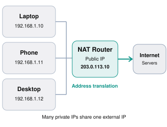
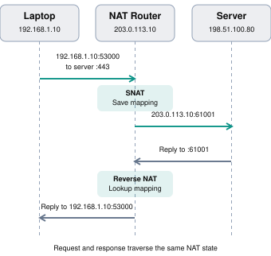
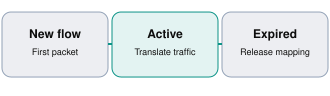
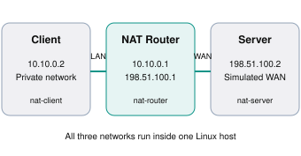

NAT is one of the most important networking concepts for backend engineers, system designers, DevOps engineers, and anyone working with routers, firewalls, Docker, Kubernetes, or cloud infrastructure.
In this guide, we’ll cover how NAT works internally, its different types, how packets are modified, how connection tracking works, and how to implement and debug NAT using Linux commands.
NAT (Network Address Translation) is a networking technique that modifies the source or destination IP address of packets as they travel through a router, firewall, or another network device.
Some forms of NAT also modify transport-layer port numbers.
NAT commonly allows multiple devices in a private network to communicate with external networks using a single public IPv4 address.
For example, your home may contain:
192.168.1.10192.168.1.11192.168.1.12203.0.113.10All three devices can access the Internet simultaneously, with external servers seeing connections originating from the router’s public IP address.
The public-looking addresses in this tutorial, including 203.0.113.x and 198.51.100.x, are reserved documentation addresses used for illustration, not reachable Internet servers.

Why do we need NAT?
The main reason for widespread IPv4 NAT is IPv4 address scarcity.
IPv4 addresses contain 32 bits:
232 = 4,294,967,296
That gives approximately 4.3 billion possible IPv4 addresses, many of which are reserved or otherwise not globally available.
Without address sharing, providing a dedicated public IPv4 address to every phone, laptop, smart TV, server, and IoT device would be impractical.
NAT enables address reuse across private networks.
Other important motivations include:
NAT’s basic behavior, including address-only translation and address-plus-port translation, is documented in RFC 3022 — Traditional NAT.
Address allocation
Before understanding NAT, you must distinguish public and private addresses.
| Property | Private IPv4 | Public IPv4 |
|---|---|---|
| Globally unique | No | Normally yes |
| Routable on public Internet | No | Generally yes, if assigned and routed |
| Common usage | LANs, VPCs, internal networks | Public servers, ISP connections |
| NAT required for IPv4 Internet access? | Typically | Not inherently |
| Example | 192.168.1.10 | A publicly assigned routable address |
Private IPv4 ranges
RFC 1918 defines three ranges:
| Address range | CIDR | Number of addresses |
|---|---|---|
10.0.0.0 – 10.255.255.255 | /8 | 16,777,216 |
172.16.0.0 – 172.31.255.255 | /12 | 1,048,576 |
192.168.0.0 – 192.168.255.255 | /16 | 65,536 |
Different organizations can independently use these same private addresses.
For example, thousands of office networks can contain a machine with IP 192.168.1.10.
That is possible because the address is meaningful inside its network, not necessarily globally.
Check your addresses
On Linux:
# Show addresses assigned to your machine
ip addr show
# Show IPv4 addresses only
ip -4 addr
# Show routing table
ip route
# Show the route chosen for a destination
ip route get 8.8.8.8Find the IP address visible to an external server:
curl -4 https://api.ipify.orgThe two addresses may differ because a NAT device translates your outgoing traffic. A proxy or VPN can also affect the externally visible address.
Assume the following topology:
| Component | IP address |
|---|---|
| Laptop | 192.168.1.10 |
| Router LAN interface | 192.168.1.1 |
| Router WAN interface | 203.0.113.10 |
| External server | 198.51.100.80 |
The laptop opens an HTTPS connection using local TCP source port 53000.
Step 1 — Laptop sends a packet
The original packet has:
IP Header:
Source IP = 192.168.1.10
Destination IP = 198.51.100.80
TCP Header:
Source Port = 53000
Destination Port = 443Its connection endpoints are:
192.168.1.10:53000 → 198.51.100.80:443Step 2 — The packet reaches the router
The laptop discovers that 198.51.100.80 is outside its local subnet.
It forwards the packet to its default gateway, 192.168.1.1.
The router examines the packet, applies relevant forwarding and NAT rules, and establishes a translation mapping.
Suppose the NAT router selects public TCP port 61001.
The mapping is:
192.168.1.10:53000
↓ NAT
203.0.113.10:61001Step 3 — The router modifies the packet
The router replaces the source address and potentially the source port.
BEFORE NAT
Source: 192.168.1.10:53000
Destination: 198.51.100.80:443
AFTER NAT
Source: 203.0.113.10:61001
Destination: 198.51.100.80:443This is called Source NAT (SNAT).
Because the port also changes in this example, it is specifically an example of Network Address and Port Translation (NAPT), commonly called PAT.
Step 4 — External server responds
The external server does not need to know the laptop’s private address.
It responds to the source endpoint visible in the received packet:
Source: 198.51.100.80:443
Destination: 203.0.113.10:61001Step 5 — Router performs reverse translation
The router looks up its stored NAT state and determines that the reply belongs to the laptop.
It transforms the destination:
BEFORE REVERSE TRANSLATION
198.51.100.80:443 → 203.0.113.10:61001
AFTER REVERSE TRANSLATION
198.51.100.80:443 → 192.168.1.10:53000The laptop receives the response as part of its original TCP connection.
Complete packet flow

Notice that the router is not creating a separate application-level HTTP request. It is forwarding and modifying network packets.
That distinction is important when comparing NAT with a proxy.
One of the most important questions is:
When hundreds of devices share one public IP address, how does the router know which reply belongs to which device?
The answer is its translation and connection-tracking state.
Example NAT table
Suppose three machines open TCP connections to the same server.
| Internal endpoint | External translated endpoint | Destination |
|---|---|---|
192.168.1.10:50000 | 203.0.113.10:40001 | 198.51.100.80:443 |
192.168.1.11:50000 | 203.0.113.10:40002 | 198.51.100.80:443 |
192.168.1.12:50000 | 203.0.113.10:40003 | 198.51.100.80:443 |
Although all three devices independently selected local source port 50000, the NAT router gave their connections distinct external ports.
When the router receives a reply for 203.0.113.10:40002, it can associate it with the second connection.
The TCP/UDP five-tuple
A typical IP flow is identified using:
(
Protocol,
Source IP,
Source Port,
Destination IP,
Destination Port
)For example:
(
TCP,
192.168.1.10,
53000,
198.51.100.80,
443
)This combination is called the 5-tuple.
A stateful NAT implementation uses packet identifiers, flow state, mappings, and filtering rules to determine the correct translation. The precise mapping keys depend on the NAT implementation and its mapping behavior.
NAT is stateful in typical home-router usage
A dynamic NAT mapping has a lifecycle:

For TCP, state can track connection establishment, ongoing traffic and closure. UDP has no built-in connection handshake, so NAT devices rely primarily on observed traffic and timeouts.
In Linux, this state is managed by the Netfilter connection-tracking subsystem, commonly called conntrack. The nftables documentation explains that NAT rules normally establish the mapping on the first packet rather than reselecting a translation for every subsequent packet.
There are several ways to classify NAT. Two particularly useful classifications are based on what gets translated and how mappings are allocated.
5.1 Source NAT (SNAT)
SNAT changes the source IP address of a packet.
It commonly operates when traffic leaves a private network.
Example:
Original packet:
192.168.1.10:53000 → 198.51.100.80:443
After SNAT:
203.0.113.10:53000 → 198.51.100.80:443Here, only the source IP changes. In actual deployments, the router may change the source port as well.
Common use cases include outbound Internet access, private cloud subnets connecting to external services, and network migrations.
5.2 Destination NAT (DNAT)
DNAT changes the destination IP address of a packet.
It is commonly used to forward incoming requests to an internal server.
Imagine hosting a Spring Boot application on:
Internal server: 192.168.1.50:8080
Router WAN IP: 203.0.113.10An external client requests:
http://203.0.113.10:8080The router performs DNAT:
BEFORE DNAT
Source: 198.51.100.25:52000
Destination: 203.0.113.10:8080
AFTER DNAT
Source: 198.51.100.25:52000
Destination: 192.168.1.50:8080The application receives the request at its private address.
Replies traverse the same NAT device so their source can be translated back to the router’s external endpoint.
This is the basic principle behind port forwarding.
5.3 Port Address Translation (PAT/NAPT)
PAT changes transport-layer ports, usually together with IP addresses.
It is also known as:
PAT is what makes sharing one IPv4 address across many simultaneous connections practical.
For example:
Laptop A:
192.168.1.10:50000
↓
203.0.113.10:40001
Laptop B:
192.168.1.11:50000
↓
203.0.113.10:40002
Laptop C:
192.168.1.12:50000
↓
203.0.113.10:40003The external ports help distinguish connections.
Important: PAT does not necessarily change the source port every time. Many NAT devices attempt to preserve the original port when feasible.
5.4 Static NAT
Static NAT creates a fixed mapping between addresses.
For example:
10.0.0.10 ↔ 203.0.113.10Every packet belonging to that mapping uses the same translated address.
Static NAT is useful when an internal system needs a predictable external address.
An address-only mapping is distinct from a fixed port-forwarding rule, although both involve static configuration.
5.5 Dynamic NAT
Dynamic NAT selects an address from an available pool.
Suppose a company has:
Private addresses:
10.0.0.10
10.0.0.11
10.0.0.12
External address pool:
203.0.113.10
203.0.113.11An address-only dynamic NAT might allocate:
10.0.0.10 → 203.0.113.10
10.0.0.11 → 203.0.113.11If both external addresses are occupied, another internal host cannot obtain an additional simultaneous one-to-one binding until an address becomes available.
Dynamic NAPT avoids this particular limitation by sharing external addresses through ports.
5.6 NAT comparison
| Type | What changes? | Typical application |
|---|---|---|
| SNAT | Source address, sometimes source port | Outbound access |
| DNAT | Destination address, sometimes destination port | Incoming requests |
| PAT/NAPT | Address and port translation | Share one IPv4 |
| Static NAT | Fixed address mapping | Predictable external address |
| Dynamic NAT | Address allocated from pool | Shared public address pool |
| Masquerading | SNAT using outgoing interface address | Home routers, Linux gateways |
The terms overlap: a dynamic NAPT connection can perform SNAT, while a static port-forward uses DNAT.
Source address translation
Before translation
192.168.1.10:53000
198.51.100.80:443
NAT device modifies packet
After translation
203.0.113.10:53000
198.51.100.80:443
Source IP changed
The external server sees the router's external IP rather than the internal client IP.
NAT is not a distinct OSI layer.
Traditional IPv4 NAT operates primarily on IP packet headers at Layer 3, while NAPT also examines and modifies Layer 4 transport identifiers such as TCP and UDP ports.
| Layer | Technology | NAT relationship |
|---|---|---|
| 7 — Application | HTTP, DNS | Usually not directly interpreted by basic NAT |
| 4 — Transport | TCP, UDP | PAT can modify ports |
| 3 — Network | IPv4 | NAT modifies IP addresses |
| 2 — Data link | Ethernet | Link-layer forwarding occurs separately |
Does NAT change HTTP data?
Ordinary IP/port NAT does not need to modify HTTP headers or HTTP bodies.
If a client sends:
GET /orders HTTP/1.1
Host: api.example.comThe NAT device can translate the packet while leaving the HTTP request content unchanged.
Similarly, ordinary NAT does not decrypt HTTPS traffic. TLS can remain end-to-end between the client and server.
There are exceptions: Application Layer Gateways (ALGs) sometimes inspect or rewrite application payloads for protocols that embed addresses or ports, such as traditional FTP.
What actually changes inside a packet?
A NAT implementation may modify:
IP routing can also change the TTL independently of the NAT operation.
It is incorrect to think that NAT is simply replacing a text string containing an IP address. It is a packet-processing operation that must preserve valid protocol semantics.
Linux provides NAT through the Netfilter subsystem.
The usual packet-processing path for forwarded traffic is:
Packet enters network interface
Routing decision
Is the destination local or forwarded?
FORWARD
Forwarding firewall rules can accept or reject the packetPacket leaves network interface
This is the normal high-level forwarded-packet path. Packets generated locally or delivered to the local machine take different paths, involving OUTPUT or INPUT rather than FORWARD.
The major Netfilter hooks are:
| Hook | Purpose |
|---|---|
PREROUTING | Process incoming packets before routing |
INPUT | Process packets destined for the local machine |
FORWARD | Process packets routed through the machine |
OUTPUT | Process locally generated packets |
POSTROUTING | Process packets before transmission |
A Linux router must also have IP forwarding enabled.
# Check whether IPv4 forwarding is enabled
sysctl net.ipv4.ip_forward
# Enable it (until reset or reboot)
sudo sysctl -w net.ipv4.ip_forward=1Modern Linux systems commonly use nftables to configure Netfilter; iptables syntax remains widely encountered.
Let’s first understand the individual commands.
The following examples assume a Linux machine acting as a router, with:
LAN interface: eth1
LAN subnet: 192.168.1.0/24
WAN interface: eth0These are illustrative interface names. Check actual names with ip link.
Example A — Configure outbound SNAT
Create the NAT table and its postrouting chain:
sudo nft add table ip nat
sudo nft 'add chain ip nat postrouting {
type nat hook postrouting priority 100;
policy accept;
}'Enable masquerading:
sudo nft 'add rule ip nat postrouting
ip saddr 192.168.1.0/24
oifname "eth0"
masquerade'This instructs Linux to translate outgoing traffic from the private subnet using the outgoing interface’s IPv4 address.
If the router’s WAN address changes, masquerading automatically uses the current interface address.
For a fixed WAN address, you could instead use:
sudo nft 'add rule ip nat postrouting
ip saddr 192.168.1.0/24
oifname "eth0"
snat to 203.0.113.10'The 203.0.113.10 address is illustrative; a real rule must use an appropriate address actually assigned or routed to your device.
Example B — Configure port forwarding using DNAT
Suppose an internal Spring Boot application listens at:
192.168.1.50:8080You want connections arriving at WAN port 9090 to be forwarded to it.
sudo nft 'add chain ip nat prerouting {
type nat hook prerouting priority -100;
policy accept;
}'Add the rule:
sudo nft 'add rule ip nat prerouting
iifname "eth0"
tcp dport 9090
dnat to 192.168.1.50:8080'Result:
External Client
|
| TCP request to WAN_IP:9090
v
Linux NAT Router
|
| DNAT
v
192.168.1.50:8080
|
v
Spring Boot ApplicationYou still need IP forwarding, suitable firewall permissions, and a return route through the NAT device.
Example C — Inspect NAT rules
# Show all nftables rules
sudo nft list ruleset
# Show the NAT table
sudo nft list table ip nat
# Show active connection tracking entries
sudo conntrack -L
# Monitor new connection tracking events
sudo conntrack -EThe nftables manual covers the supported SNAT, DNAT, masquerade, and redirect statements.
You can demonstrate real packet translation on a single Linux machine using network namespaces.
A network namespace has its own network interfaces, IP addresses, routing tables, and network configuration.
We’ll create three isolated environments:

Download the runnable examples
NAT practical examples
Contains nat_lab.sh and NatTableSimulator.java
3.2 KB
Download the complete NAT examples ZIP
The Java simulator was compiled and tested. The Linux script passed a shell syntax check; its network operations require a suitable privileged Linux environment.
Step 1 — Install requirements
On Ubuntu or Debian:
sudo apt update
sudo apt install -y \
iproute2 \
nftables \
conntrack \
tcpdump \
curl \
python3 \
unzipExtract the ZIP:
unzip nat_tutorial_examples.zip
cd nat_tutorialUse a disposable Linux VM or development machine, not a production router.
Step 2 — Create the network
Run:
sudo bash nat_lab.sh setupThe script creates the namespaces and virtual Ethernet interfaces, assigns addresses, enables forwarding and configures these NAT rules:
# Source NAT for outgoing connections
nft 'add rule ip nat postrouting
ip saddr 10.10.0.0/24
oifname "veth-r-wan"
masquerade'
# Destination NAT for incoming TCP requests
nft 'add rule ip nat prerouting
iifname "veth-r-wan"
tcp dport 8080
dnat to 10.10.0.2:8000'The complete commands, including namespace setup and chain creation, are in the script.
The simulated external server deliberately has no default route to the private subnet. This makes the address translation necessary for its return traffic.
Step 3 — Test outbound NAT
Open a terminal and start an HTTP server in the simulated external network:
sudo bash nat_lab.sh serve-externalIn a second terminal, execute the HTTP request from the private client:
sudo bash nat_lab.sh test-outboundThe outgoing flow is:
Before NAT:
10.10.0.2:ephemeral → 198.51.100.2:8000
After NAT:
198.51.100.1:translated-port → 198.51.100.2:8000The server should respond with the Python HTTP server’s directory listing.
Step 4 — Observe real packet translation
In another terminal:
sudo bash nat_lab.sh captureThen rerun the outbound test.
You can inspect packets leaving the router’s WAN interface. Their source should be 198.51.100.1, rather than the private address 10.10.0.2.
You can also view the connection-tracking table:
sudo bash nat_lab.sh inspectWith SNAT, you may see a connection-tracking entry resembling:
Original direction:
src=10.10.0.2
dst=198.51.100.2
Reply direction:
src=198.51.100.2
dst=198.51.100.1The actual ports and TCP connection state depend on the traffic and timing.
Step 5 — Test inbound DNAT
In one terminal, start an HTTP server on the private client:
sudo bash nat_lab.sh serve-internalFrom a second terminal:
sudo bash nat_lab.sh test-inboundThe request goes to:
http://198.51.100.1:8080But it is delivered to:
http://10.10.0.2:8000This demonstrates port forwarding using DNAT.
Step 6 — Clean up
Stop any running HTTP server or packet capture sessions, then run:
sudo bash nat_lab.sh cleanupThis deletes the three isolated network namespaces.
Many Linux tutorials and existing systems use iptables.
For a router with WAN interface eth0, LAN interface eth1, and private subnet 192.168.1.0/24:
# Enable packet forwarding
sudo sysctl -w net.ipv4.ip_forward=1
# Outbound NAT
sudo iptables -t nat -A POSTROUTING \
-s 192.168.1.0/24 \
-o eth0 \
-j MASQUERADE
# Inbound port forwarding
sudo iptables -t nat -A PREROUTING \
-i eth0 \
-p tcp \
--dport 9090 \
-j DNAT \
--to-destination 192.168.1.50:8080Where forwarding is restricted by the firewall, allow the corresponding traffic:
# Allow the incoming connection to the internal server
sudo iptables -A FORWARD \
-i eth0 -o eth1 \
-p tcp -d 192.168.1.50 --dport 8080 \
-j ACCEPT
# Allow established return traffic
sudo iptables -A FORWARD \
-m conntrack \
--ctstate ESTABLISHED,RELATED \
-j ACCEPTDepending on the existing firewall policy, additional rules are needed for outbound connections. Rule ordering also matters.
Inspect the result:
sudo iptables -t nat -L -n -v
sudo iptables -L FORWARD -n -vThese are alternative configuration examples; avoid mixing native nftables and iptables rules without understanding how your system’s firewall backend integrates them.
A normal Java application using java.net.Socket does not implement router-level NAT. The operating system handles packets, and a NAT-capable network device modifies them.
However, we can simulate a NAT mapping table using Java to understand the algorithm.
The downloadable NatTableSimulator.java implements a simplified version of TCP PAT.
The basic data structures are:
public record Endpoint(String ip, int port) {}
public record Flow(String protocol, Endpoint inside, Endpoint remote) {}
public record Mapping(Flow original, Endpoint outside) {}The simulator maintains two maps:
Map<Flow, Mapping> outgoing; # Original flow -> translated mapping
Map<ReplyKey, Mapping> replies; # Reply lookup -> original mappingConceptually, the outbound algorithm is:
translateOutbound(packet):
flow = identifyFlow(packet)
if mappingExists(flow):
mapping = lookup(flow)
else:
port = allocateExternalPort()
mapping = createMapping(flow, port)
save(mapping)
replaceSourceEndpoint(packet, mapping)
return packetThe reverse lookup is:
translateInbound(reply):
mapping = findMappingForReply(reply)
if mapping == null:
no matching NAT mapping
return
replaceDestinationEndpoint(
reply,
mapping.originalInternalEndpoint
)
return replyActual implementations additionally need checksums, timeouts, collision management, protocol state, filtering and packet processing.
Run the Java simulator
javac NatTableSimulator.java
java NatTableSimulatorOutput:
Laptop: 192.168.1.10:50000 -> 203.0.113.10:40001
Phone: 192.168.1.11:50000 -> 203.0.113.10:40002
Reply to 203.0.113.10:40001 routes to 192.168.1.10:50000
Reply to 203.0.113.10:40002 routes to 192.168.1.11:50000
Unsolicited reply: nullThe example deliberately models mappings per five-tuple. Real NAT devices vary in their mapping behavior; this is a teaching simulator rather than a working packet translator.
These mechanisms are related, but solve different problems.
| Component | Primary job | Usually changes |
|---|---|---|
| NAT | Translate network endpoints | IP/port |
| Router | Forward packets between networks | Next-hop/L2 addressing |
| Firewall | Allow or block traffic | Usually forwarding decision |
| Forward proxy | Act on behalf of clients | Application-level connections |
| Reverse proxy | Accept traffic for backend servers | Application-level connections |
| Load balancer | Distribute traffic | Selected backend, sometimes IP/port |
Is NAT a security mechanism?
NAT is not a replacement for a firewall.
NAT typically prevents arbitrary new inbound connections from reaching private devices because no appropriate dynamic mapping or explicit port forwarding exists.
But its fundamental job is translation, not applying a comprehensive security policy.
A firewall can enforce rules based on source, destination, protocol, connection state and other attributes.
A machine with a publicly routable IP can be securely protected using a firewall without NAT.
Likewise, publishing a service through DNAT may expose it to attacks if firewall and application security controls are insufficient.
Docker
When you run:
docker run -d \
--name web \
-p 8080:80 \
nginxDocker makes the container’s port 80 reachable through host port 8080.
On a normal Linux bridge network, the implementation uses networking rules and may involve DNAT, masquerading and, in some configurations, user-space forwarding.
For outbound container traffic, Docker commonly uses masquerading so external services see the host’s address rather than the container’s private bridge address.
A more restricted published port is:
docker run -d \
-p 127.0.0.1:8080:80 \
nginxThis binds the published port to the host’s loopback address rather than all host interfaces.
Kubernetes
In many Kubernetes configurations, Service networking uses destination translation or equivalent forwarding mechanisms to send connections from a virtual Service address to selected backend Pods.
For example:
Service ClusterIP: 10.96.0.20:80
|
v
Selected Pod: 10.244.1.7:8080However, not all Kubernetes implementations use conventional iptables DNAT. Depending on the networking implementation, IPVS, nftables or eBPF-based data paths may be involved.
AWS NAT Gateway
A common cloud architecture looks like:
Private EC2 instances
|
v
Private subnet
|
v
NAT Gateway
|
v
Internet Gateway
|
v
InternetA public AWS NAT Gateway lets resources in a private subnet initiate external connections and receive responses without giving each resource a public IPv4 address.
It does not accept unsolicited inbound Internet connections to those private resources. To publish applications, architectures typically use a suitable public-facing load balancer or another purpose-built ingress mechanism.
15.1 Double NAT
Double NAT occurs when packets pass through multiple NAT devices.
For example:
Laptop
192.168.1.10
|
v
Home router
WAN: 10.0.0.5
|
v
ISP/router NAT
Public-facing address
|
v
InternetThe first router translates the laptop’s address into 10.0.0.5. The upstream device then translates it again.
Outbound connections generally work, but inbound port forwarding becomes more complicated because multiple devices may need coordinated mappings.
15.2 Carrier-Grade NAT (CGNAT)
Some Internet service providers share public IPv4 addresses among many subscribers using large NAT systems.
The shared address block 100.64.0.0/10 is reserved specifically for this kind of deployment.
You can inspect your router’s WAN IPv4 address to check for a possible CGNAT deployment.
A WAN address within 100.64.0.0/10 is a strong indicator. A private WAN address or a mismatch between your WAN address and externally visible address can also indicate upstream NAT, although that alone does not uniquely establish CGNAT.
CGNAT can complicate self-hosting, incoming connections and peer-to-peer connectivity.
15.3 NAT hairpinning
Hairpin NAT, also called NAT loopback, allows devices inside a network to access an internal server using its external address.
Example:
Laptop: 192.168.1.20
Accesses:
203.0.113.10:443
NAT translates to:
192.168.1.50:443Both laptop and server are on the same private network.
Hairpin connections may require additional source translation so replies return through the NAT router rather than bypassing it.
15.4 NAT traversal
Two devices behind separate NAT routers often cannot establish direct inbound connections to each other without additional coordination.
Common NAT traversal technologies include:
These are especially relevant to WebRTC, voice/video calls and peer-to-peer applications. Direct hole punching is not guaranteed to succeed across every combination of NAT mapping and filtering behaviors.
15.5 NAT mapping behavior vs filtering behavior
Two NATs can translate the same type of traffic differently.
Mapping behavior determines whether the same internal IP/port is assigned the same external IP/port when communicating with different remote endpoints.
Filtering behavior determines which external endpoints are permitted to send packets back through an existing mapping.
RFC 4787 describes endpoint-independent, address-dependent, and address-and-port-dependent behaviors. This is more precise than the often-used but ambiguous informal categories such as "symmetric NAT."
15.6 NAT64
NAT64 allows IPv6-only clients to communicate with IPv4-only services.
In a typical DNS64 + NAT64 setup:
IPv6-only client
|
v
NAT64 gateway
|
v
IPv4-only serverDNS64 can synthesize IPv6 DNS answers for IPv4-only destinations, while NAT64 translates packets between IPv6 and IPv4.
Unlike ordinary IPv4 NAT, this also requires translation between IP protocol versions.
Native IPv6 networks generally do not need NAT merely to share a single external address; publicly routable IPv6 addresses and stateful firewalls can provide connectivity and access control separately.
| Challenge | Explanation | Typical mitigation |
|---|---|---|
| Port exhaustion | Too many mappings compete for available external ports | Additional external IPs, connection reuse, capacity planning |
| Connection timeouts | Idle NAT state expires | Application-level keepalives where appropriate |
| Peer-to-peer difficulty | Unsolicited inbound traffic lacks a mapping | ICE, TURN, explicit forwarding |
| Asymmetric routing | Return packets bypass the translating device | Correct routing, symmetric paths |
| Troubleshooting complexity | Client IP and external IP differ | Connection logs, NAT flow records |
| Application compatibility | Some protocols embed IPs in payloads | Protocol-aware solutions |
| High availability | Stateful NAT mappings may be lost on failover | Resilient gateway design, state synchronization where supported |
Can one public IP support only 65,535 connections?
Not necessarily.
A TCP or UDP port is 16 bits, giving 65,536 possible port numbers. Some ports are reserved or otherwise unavailable for allocation, and practical port allocation policies further limit capacity.
However, NAT connection capacity is not always simply the number of available external ports. Some implementations can reuse translated ports for different remote destinations while still uniquely identifying flows.
The actual limit depends on the mapping policy, protocol, available public IP addresses, destination distribution, NAT state capacity, and resource limits.
Why a backend engineer should care
Consider a Spring Boot service using an HTTP client to call an external payment API.
If hundreds of service instances are behind a shared NAT gateway, the external provider may see requests from the same public IP.
Heavy connection churn could contribute to port exhaustion or NAT table pressure.
The usual improvements include connection pooling, keep-alive, bounded concurrency, reasonable timeouts, and appropriately sized egress infrastructure.
This is one reason proper HTTP client reuse matters in distributed systems.
On Linux, these commands are particularly useful.
| Goal | Command |
|---|---|
| Show addresses | ip -4 addr |
| Show routes | ip route |
| Show selected route | ip route get 8.8.8.8 |
| Verify forwarding | sysctl net.ipv4.ip_forward |
| Show nftables rules | sudo nft list ruleset |
| Show iptables NAT | sudo iptables -t nat -L -n -v |
| Show tracked connections | sudo conntrack -L |
| Monitor connections | sudo conntrack -E |
| Capture interface packets | sudo tcpdump -ni eth0 |
| Show listening ports | ss -lntup |
When diagnosing failed connectivity, check routing, forwarding, firewall filtering, NAT rules and return routes separately. A correct NAT rule alone does not guarantee a connection will succeed.
Does NAT automatically provide Internet access?
No. The router still requires valid upstream connectivity, correct routes, IP forwarding and suitable firewall rules.
Does every packet require a new NAT entry?
No. Stateful NAT typically creates a mapping for a flow and reuses it for subsequent packets.
Can two computers have the same private IP address?
Yes, if they are in separate address domains. Two independent home networks can both use 192.168.1.10.
Can two clients share the same translated source port?
Depending on the NAT’s mapping rules and the other flow identifiers, yes. However, conflicting mappings cannot be allowed to create ambiguity for return traffic.
Can NAT work with UDP?
Yes. UDP NAT uses mappings and timeouts even though UDP itself has no connection handshake.
Is NAT the same as a VPN?
No. NAT translates addresses, whereas a VPN establishes a virtual network connection, commonly through tunneling and encryption.
Why does a server see my router’s public IP rather than my laptop’s IP?
Because source NAT replaces the private source endpoint before the packet reaches the server.
Does NAT hide the identity of individual users?
It can hide their private network addresses from the destination, but it does not provide anonymity. Applications, cookies, authentication, traffic analysis, and network logs can still identify or distinguish users.
Think of NAT as a network-level endpoint translator.
SNAT
Changes where a packet appears to come from.
DNAT
Changes where a packet is delivered.
PAT/NAPT
Translates ports to support address sharing.
Connection tracking
Remembers how to translate subsequent packets
and responses.
Routing
Decides where to forward the packet.
Firewall
Decides whether traffic is permitted.For backend engineering, the most important things to master are SNAT, DNAT, PAT, connection tracking, the Netfilter packet path, port forwarding, and NAT behavior in container and cloud networks. These concepts explain a large number of real production connectivity problems.